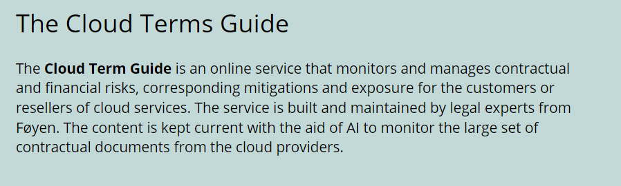
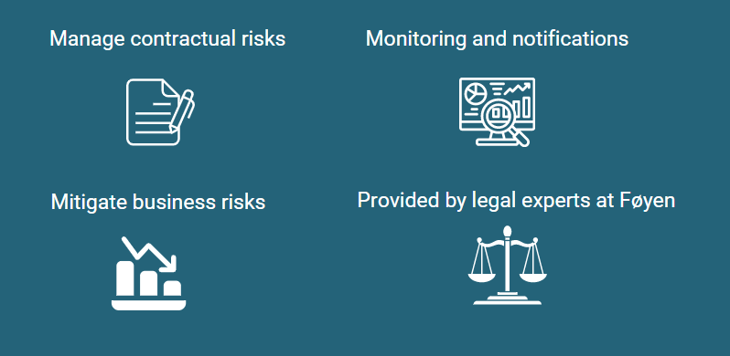

The Cloud Terms Guide will monitor and manage the risks and exposure to the cloud contracts and terms from the cloud providers like Amazon, Microsoft and Google. It can keep track of current mitigating actions and resulting risk profile for you.
The contractual terms will be updated from time to time by the cloud providers. The risk items with corresponding recommended mitigations will be maintained by specialists from Føyen. The service will alert you when a risk has changed as a consequence of the providers’ update of their contractual terms. This can lead to your risk action becoming invalid, or that the risk exposure has changed. You react to the alert and reassess the risk, mitigation and exposure.

You can maximize business benefits of the cloud while maintaining compliance and transparency. New technology is released first on the cloud, and later on traditional platforms. Don’t miss out on the opportunities (AI, analytics, infrastructure, security) that new technology offers. Maximize your usage, avoid the pitfalls and stay in control.
Risk & Compliance for regulated companies and organizations. (Do we have control? What is our exposure?).
Traceability of actions (Who is responsible for the action?).
Is the mitigation proportional to the risk? Should the mitigation be addressed through the contract, finances, organization, process, or solution. What is the estimated cost to implement the mitigation?
Follow-up of risks and mitigations at the management level. (Have you done it?)
Financial write-up when the risk is no longer valid. (When does the risk expire? How much?)
The service will help you apply a Cloud First strategy. Segment the solutions and go to the Cloud where possible. You can implement mitigations that are proportional to the risk while maintaining control. Fall back to on-prem when no adequate mitigations are possible.
For each mitigating action you should assess Expected Loss because of the residual risk remaining after the mitigation has been implemented. That means the annual statistical expected value for cost incurred when (not if) that particular risk occurs. If the residual risk remaining is greater than Low, there should be an estimated for the expected loss.
The mitigation could be addressed in five principally different ways - in the contract, financials, organization, process or solution. If the mitigation is addressed through the solution, the action must be propagated into a solution requirement, and be handled correspondingly. If the mitigation is financial, a cost element must be reflected in a budget. If the mitigation is organizational or processual, it must be defined as a responsibility for an organizational role or defined in an operational process description.
Why not just use a spreadsheet or my existing risk management tool?
The risks in the Cloud Terms Guide are maintained by legal experts from Føyen. They regularly monitor changes to the terms from the cloud providers and update the online database, so that cloud risk management becomes part of a digital process for the enterprise. The Cloud Terms Guide works as Contract-as-a-Service.The CTG is a tool that is simple to use for management purposes. Specific risks and mitigations can be handled downstream operationally in the organization using a classic risk management tool.